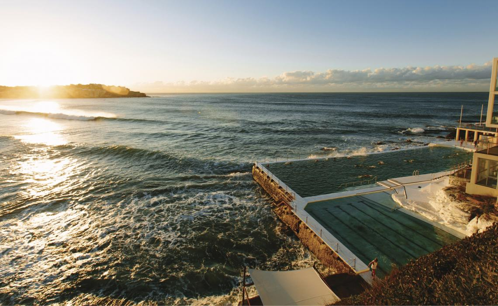
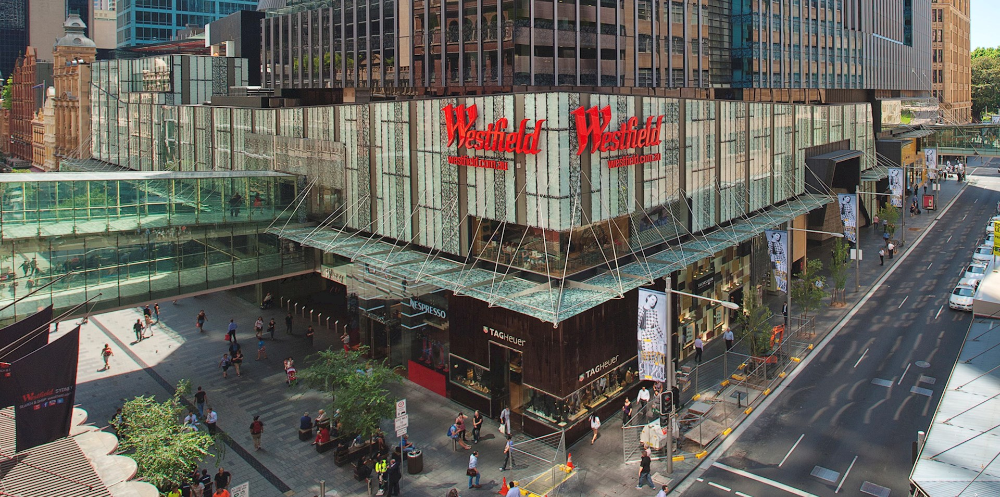
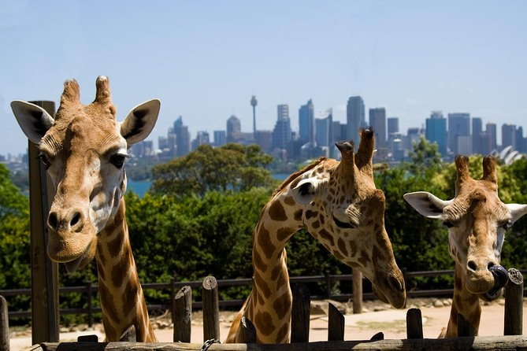
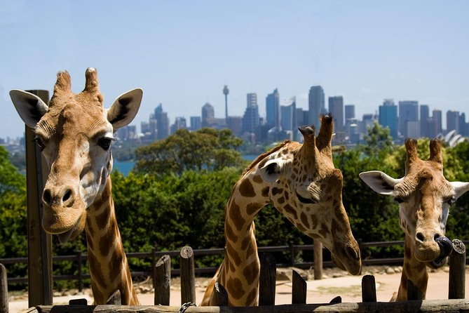

SYDNEY HARBOUR

BONDI

WESTFIELD CENTER
En av de vakreste byene i verden, byen stråler fra den glitrende havnen til ikoniske Bondi Beach i øst, Golden Palm Beach i nord, eventyr hovedstad i vest og Australias eldste nasjonalpark i sør. Operahuset i Sydney ligger nær Circular Quay.
 
